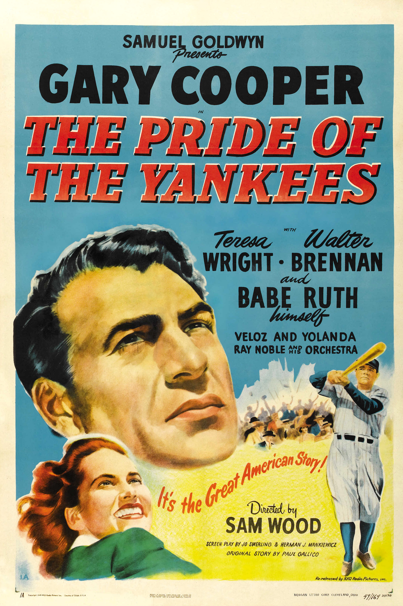

The Pride of the Yankees
15th Academy Awards
(Oscars 1943)
11 Nominations, 1 Award
| Nominations | ||
|---|---|---|
| Category | Nominees | Result |
| Outstanding Motion Picture | Samuel Goldwyn Productions | Nominated |
| Actor | Gary Cooper | Nominated |
| Actress | Teresa Wright | Nominated |
| Writing (Original Motion Picture Story) | Paul Gallico | Nominated |
| Writing (Screenplay) | Herman J. Mankiewicz and Jo Swerling | Nominated |
| Cinematography (Black-and-White) | Rudolph Maté | Nominated |
| Film Editing | Daniel Mandell | Won |
| Art Direction (Black-and-White) | Howard Bristol and Perry Ferguson | Nominated |
| Special Effects | Jack Cosgrove, Ray Binger, and Thomas T. Moulton | Nominated |
| Sound Recording | Thomas T. Moulton | Nominated |
| Music (Music Score of a Dramatic or Comedy Picture) | Leigh Harline | Nominated |